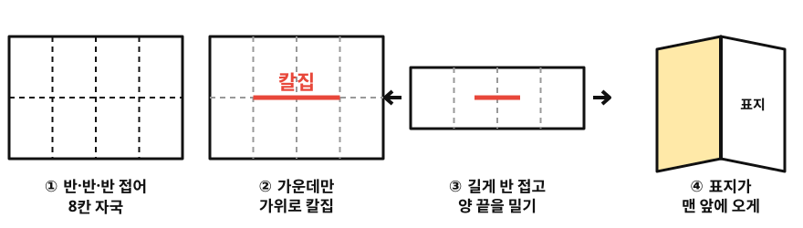
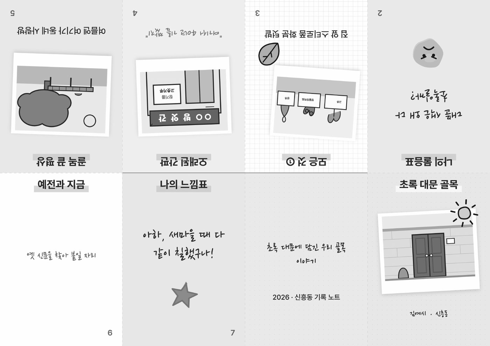

SESSION 05 · 출판과 공유, 그리고 내년
내 책 접기 →
공유회 →
원페이퍼
신흥동행정복지센터 2층 · 14:00 – 16:00
TODAY · 오늘 할 일
오늘은 이렇게 해요.
- ①A3 한 장으로 8쪽 책 접기25분
- ②공유회 · 한 사람 2분 내 책 소개35분
- ③쉬는 시간10분
- ④내년 기록화 사업 원페이퍼40분
- ⑤테이블별 발표 · 마무리10분
2시간 · 신흥동행정복지센터 2층
GOAL · 학습목표
오늘이 끝나면
이렇게 할 수 있어요.
- 01A3 한 장을 접어 내 책 8쪽을 완성해요.
- 02내 책을 2분 동안 소개하고, 이웃의 책에 한 마디를 건네요.
- 03내년에 해 보고 싶은 기록 사업을 원페이퍼 한 장으로 정리해요.
BOOK · 책 만들기
A3 한 장을
8쪽 책으로.
- 01가로로 반 → 다시 반 → 다시 반, 8칸 자국 내기
- 02가운데 두 칸 사이만 가위로 칼집
- 03세로로 길게 반 접어 양 끝을 밀면 십자 모양
- 041쪽(표지)이 맨 앞에 오게 정리
가운데 선에서 손가락 한 마디만큼만 가위를 넣으세요.


SHARE · 공유회
한 사람 2분,
내 책 소개.
3차시에 쓴 "한 줄 소개"로 시작해요.
제일 마음에 드는 한 쪽을 보여 주세요.
마지막에 테이블 대표 1권을 정해요.
듣는 분은 박수와 한 마디!

BREAK
쉬는 시간.
책을 책상 위에 펼쳐 두고 서로 돌려 봐요.
ONE PAPER · 원페이퍼
내년 기록화 사업
원페이퍼.
질문 10개에 쉬운 말로 답해요.
혼자도, 팀도 좋아요. 다 못 채워도 괜찮아요.
"왜 지금?"에 내 물음표를 그대로!
PRESENT · 발표
테이블별
원페이퍼 발표.
원페이퍼 한 장씩 소개해요.
오늘 가져가는 한 가지를 한마디로 말해 볼까요?
THANK YOU
사소한 것을
발견하는 힘을
함께 꺼냈어요.
고맙습니다 ? !